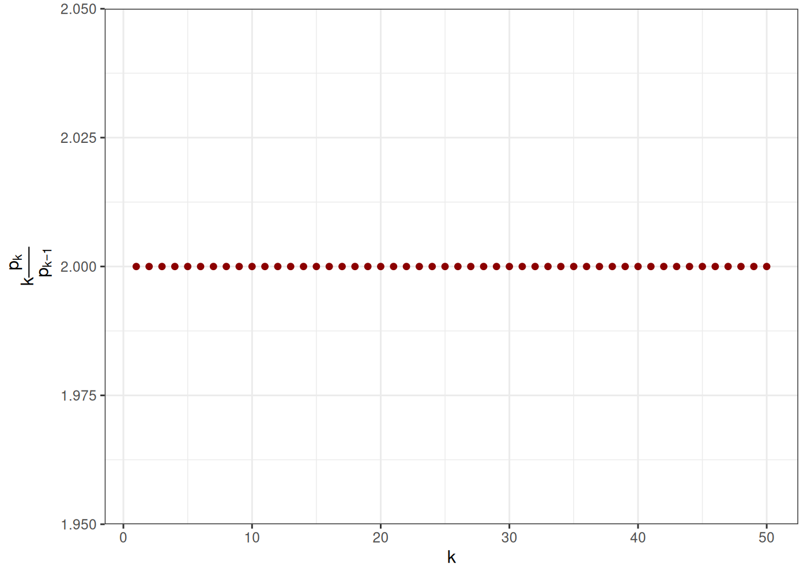
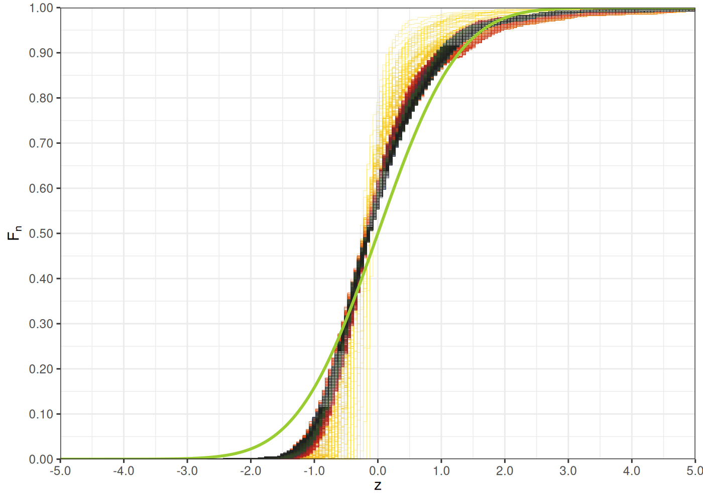
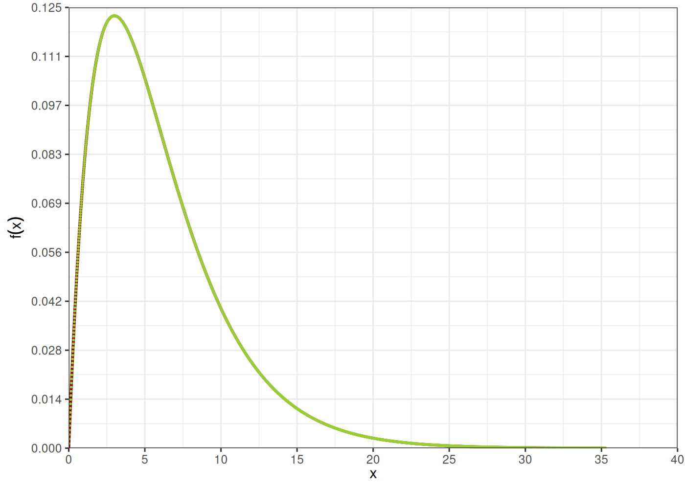

Capítulo 4 Distribuciones
4.1 Distribuciones discretas
Definición 4.1 (Distribución binomial) Una variable aleatoria \(N\) que toma valores en \(\mathbb{N}\) se dice que sigue una distribución o ley de binomial \(N \rightsquigarrow Bin( n, p )\), con parámetros \(n \in \mathbb{N}\) y \(p \in [0, 1]\), si: \[ P( N = k ) = \binom{n}{k} p^k ( 1 - p )^{n-k}, \qquad \forall k \in \{0,\ldots, n\} \] esta distribución discreta se caracteriza por presentar el valor \(k \frac{p_k}{p_{k-1}}\) decreciente conforme cambia \(k \in \mathbb{N}\)
Code
set.seed(94312)
n <- 50
p <- 0.3
k <- 2
m <- 100
N <- rbinom( n = m, size = n, prob = p ) # simular una muestra de tamaño m
pk <- dbinom( x = k, size = n, prob = p ) # cálculo de probabilidad P( N = k )
Pk <- pbinom( q = k, size = n, prob = p ) # cálculo de probabilidad P( N <= k )
p <- dbinom( x = 0:n, size = n, prob = p )
v <- 1:n * p[ 2:(n + 1) ] / p[ 1:n ]Code

Definición 4.2 (Distribución de Poisson) Una variable aleatoria \(N\) que toma valores en \(\mathbb{N}\) se dice que sigue una distribución o ley de Poisson \(N \rightsquigarrow Pois( n, p )\), con parámetro \(\lambda \in \mathbb{R}\), si: \[ P( N = k ) = \exp\left( -\lambda \right) \frac{\lambda^k}{k!}, \qquad \forall k \in \mathbb{N} \] esta distribución discreta se caracteriza por presentar el valor \(k \frac{p_k}{p_{k-1}}\) constante conforme cambia \(k \in \mathbb{N}\)
Code
lambda <- 2
k <- 2
m <- 100
N <- rpois( n = m, lambda = lambda ) # simular una muestra de tamaño m
pk <- dpois( x = k, lambda = lambda ) # cálculo de probabilidad P( N = k )
Pk <- ppois( q = k, lambda = lambda ) # cálculo de probabilidad P( N <= k )
n <- 50
p <- dpois( x = 0:n, lambda = lambda )
v <- 1:n * p[ 2:(n + 1) ] / p[ 1:n ]Code

Definición 4.3 (Distribución binomial negativa) Una variable aleatoria \(N\) que toma valores en \(\mathbb{N}\) se dice que sigue una distribución o ley de binomial negativa \(N \rightsquigarrow NBin( \alpha, p )\), con parámetro \(\alpha > 0\) y \(p \in (0,1)\), si: \[ P( N = k ) = \binom{\alpha + k - 1}{k} p^\alpha ( 1 - p )^k = \frac{\Gamma( \alpha + k )}{\Gamma(k+1) \Gamma(\alpha)}p^\alpha ( 1 - p )^k, \qquad \forall k \in \mathbb{N} \] donde \(\Gamma( \alpha ) = \int\limits_0^{+\infty} x^{\alpha - 1} \exp(-x)\ dx\), \(\forall \alpha \geq 0\).
Esta distribución discreta se caracteriza por presentar el valor \(k \frac{p_k}{p_{k-1}}\) creciente conforme cambia \(k \in \mathbb{N}\)
Code
alpha <- 2.5
p <- 0.3
k <- 2
m <- 100
N <- rnbinom( n = m, size = alpha, prob = p ) # simular una muestra de tamaño m
pk <- dnbinom( x = k, size = alpha, prob = p ) # cálculo de probabilidad P( N = k )
Pk <- pnbinom( q = k, size = alpha, prob = p ) # cálculo de probabilidad P( N <= k )
n <- 50
p <- dnbinom( x = 0:n, size = alpha, prob = p )
v <- 1:n * p[ 2:(n + 1) ] / p[ 1:n ]Code

Definición 4.4 (Distribución geométrica) Una variable aleatoria \(N\) que toma valores en \(\mathbb{N}\) se dice que sigue una distribución o ley geométrica \(N \rightsquigarrow Geo( p )\), con parámetro \(p \in (0,1]\), si: \[ P( N = k ) = ( 1 - p )^k p, \qquad \forall k \in \mathbb{N} \]
Code
Es fácil darse cuenta que la distribución geométrica \(Geo( p )\) es una binomial negativa \(BN( 1, p )\), con \(\alpha = 1\).
Asociado a estas distribuciones discretas existe un resultado de caracterización, el cual permite seleccionar la distribución de conteo.
4.2 Familia de Panjer
El criterio anterior para identificar el tipo de distribución, mediante la observación del comportamiento de la variable \(k \frac{p_k}{p_{k-1}}\), se formaliza precisamente en la definición de la familia de Panjer.
Definición 4.5 (Familia de Panjer) Una variable aleatoria discreta \(N\), que toma valores enteros positivos \(N \in \mathbb{N}\), se dice que pertenece a la familia de Panjer, si sus probabilidades \(p_k = P( N = k )\) para cada \(k \in \mathbb{N}\), satisfacen la siguiente relación de recurrencia. \[ p_k = \left( a + \frac{b}{k} \right)p_{k-1},\qquad \forall k \in \mathbb{N}\setminus \{0\} \]
Además tenemos la siguiente proposición que caracteriza a la distribución de las variables aleatorias en la familia de Panjer.
Proposición 4.1 (Caracterización familia de Panjer) Las únicas leyes de probabilidad que satisfacen la relación de recurrencia anterior son:
La ley de Poisson, la cual se obtiene para \(a = 0\) y \(b > 0\) \[ k \frac{p_k}{p_{k-1}} = b > 0,\quad \text{constante en $k$} \]
La ley binomial negativa, la cual se obtiene para \(0 < a < 1\) y \(a + b > 0\) \[ k \frac{p_k}{p_{k-1}} = a k + b > 0,\quad \text{creciente en $k$} \]
La ley binomial, la cual se obtenida para \(a < 0\) y \(b = -a(m + 1)\), para cierto \(m\) entero y positivo. \[ k \frac{p_k}{p_{k-1}} = a( k - m - 1 ) < 0, \quad \text{decreciente en $k$} \]
Para una demostración detallada de la proposición anterior se puede consultar [4] o en https://nonlifemaths.github.io/.
Code
# la librería CASdatasets fue previamente cargada
data( beMTPL97 )
beMTPL97 <- as.data.table( beMTPL97 )
conteo <- beMTPL97[ , list( fn = .N ), by = list( sex, fuel, N = nclaims ) ]
conteo[ , pn := fn / sum( fn ), by = list( sex, fuel ) ]
setorder( conteo, sex, fuel, N )
conteo[ , pns := shift( pn, type = 'lag', fill = 0 ) ]
conteo[ , jn := N * pns / pn ]
conteo %>%
kable(
label = NA,
caption = 'Estimación conteos por sexo',
row.names = FALSE,
col.names = c( "sexo", "fuel", "$N$", "$f_k$", "$p_k$", "$p_{k+1}$", "$k \\frac{p_{k+1}}{p_k}$" ),
align = 'llrrrrr',
digits = c( 0, 0, 0, 0, 5, 5, 5 ),
format.args = list( big.mark = ',', decimal.mark = '.', scientific = FALSE ),
escape = FALSE,
centering = TRUE ) %>%
kable_classic( font_size = 14, full_width = FALSE, html_font = "Cambria", position = "center" ) %>%
scroll_box( width = "100%", height = "500px" )| sexo | fuel | \(N\) | \(f_k\) | \(p_k\) | \(p_{k+1}\) | \(k \frac{p_{k+1}}{p_k}\) |
|---|---|---|---|---|---|---|
| female | gasoline | 0 | 29,533 | 0.88741 | 0.00000 | 0.00000 |
| female | gasoline | 1 | 3,384 | 0.10168 | 0.88741 | 8.72725 |
| female | gasoline | 2 | 326 | 0.00980 | 0.10168 | 20.76074 |
| female | gasoline | 3 | 33 | 0.00099 | 0.00980 | 29.63636 |
| female | gasoline | 4 | 3 | 0.00009 | 0.00099 | 44.00000 |
| female | gasoline | 5 | 1 | 0.00003 | 0.00009 | 15.00000 |
| female | diesel | 0 | 8,557 | 0.86539 | 0.00003 | 0.00000 |
| female | diesel | 1 | 1,206 | 0.12197 | 0.86539 | 7.09536 |
| female | diesel | 2 | 109 | 0.01102 | 0.12197 | 22.12844 |
| female | diesel | 3 | 14 | 0.00142 | 0.01102 | 23.35714 |
| female | diesel | 4 | 2 | 0.00020 | 0.00142 | 28.00000 |
| male | gasoline | 0 | 71,357 | 0.89714 | 0.00020 | 0.00000 |
| male | gasoline | 1 | 7,417 | 0.09325 | 0.89714 | 9.62074 |
| male | gasoline | 2 | 682 | 0.00857 | 0.09325 | 21.75073 |
| male | gasoline | 3 | 74 | 0.00093 | 0.00857 | 27.64865 |
| male | gasoline | 4 | 7 | 0.00009 | 0.00093 | 42.28571 |
| male | gasoline | 5 | 1 | 0.00001 | 0.00009 | 35.00000 |
| male | diesel | 0 | 35,489 | 0.87614 | 0.00001 | 0.00000 |
| male | diesel | 1 | 4,532 | 0.11188 | 0.87614 | 7.83076 |
| male | diesel | 2 | 439 | 0.01084 | 0.11188 | 20.64692 |
| male | diesel | 3 | 41 | 0.00101 | 0.01084 | 32.12195 |
| male | diesel | 4 | 5 | 0.00012 | 0.00101 | 32.80000 |
Code

4.3 Distribuciones continuas
Definición 4.6 (Distribución uniforme) Una variable aleatoria \(X\) a valores reales, sigue una distribución uniforme \(X \rightsquigarrow Unif( a, b )\) de parámetros \(a, b \in \mathbb{R}\), si su función de distribución acumulada es de la siguiente forma: \[ F_X( x ) = \frac{x-a}{b-a} \mathbf{1}_{[a,b)}( x ) + \mathbf{1}_{[b,+\infty)}( x ) \] sin mucho esfuerzo se puede verificar que su densidad de probabilidad está dada por la función \[ f_X( x ) = \frac{1}{b-a}\mathbf{1}_{[a,b]}( x ) \] \[ M_X( t ) = \frac{\exp(bt)-\exp(at)}{t(b-a)} \] \[ \mathbb{E}[X] = \frac{a + b}{2},\qquad \mathbb{V}[X] = \frac{(b - a)^2}{12} \]
Code
Definición 4.7 (Distribución exponencial) Una variable aleatoria \(X\) a valores reales, sigue una distribución exponencial \(X \rightsquigarrow Exp( \lambda )\) de parámetros \(\lambda > 0\), si su función de distribución acumulada es de la siguiente forma: \[ F_X( x ) = \mathbf{1}_{(0,+\infty)}( x ) \left( 1 - \exp\left( -\lambda x \right) \right) \] sin mucho esfuerzo se puede verificar que su densidad de probabilidad está dada por la función \[ f_X( x ) = \mathbf{1}_{(0,+\infty)}( x ) \lambda \exp\left( -\lambda x \right) \] \[ M_X( t ) = \frac{\lambda}{\lambda - t} \] \[ \mathbb{E}[X] = \frac{1}{\lambda},\qquad \mathbb{V}[X] = \frac{1}{\lambda^2} \]
Code
Definición 4.8 (Distribución gamma) Una variable aleatoria \(X\) a valores reales, sigue una distribución gamma \(X \rightsquigarrow Gamma( \alpha, \beta )\) de parámetros \(\alpha > 0\), \(\beta > 0\), si su función de distribución acumulada es de la siguiente forma: \[ F_X( x ) = \frac{\beta^\alpha}{\Gamma( \alpha )} \int\limits_{0}^{x} u^{\alpha-1} \exp(-\beta u)\ du \] si en caso \(\alpha\) un entero positivo, i.e. \(\alpha \in \mathbb{N}^*\), se puede calcular \(F_X( x )\) con la siguiente serie \[ F_X( x ) = 1 - \exp( -\lambda x ) \sum\limits_{n=0}^{\alpha-1} \frac{(\lambda x)^n}{n!} = \exp( -\lambda x ) \sum\limits_{n=\alpha}^{+\infty} \frac{(\lambda x)^n}{n!} \]
por su parte, la densidad de probabilidad automáticamente está dada por la función: \[ f_X( x ) = \mathbf{1}_{[0,+\infty}( x ) \frac{\beta^\alpha}{\Gamma( \alpha )} x^{\alpha-1} \exp(-\beta x) \] \[ M_X( t ) = \left( \frac{\beta}{\beta - t} \right)^\alpha,\qquad \text{si}\ t < \beta \] \[ \mathbb{E}[X] = \frac{\alpha}{\beta},\qquad \mathbb{V}[X] = \frac{\alpha}{\beta^2} \]
Code
Definición 4.9 (Distribución normal) Una variable aleatoria \(X\) a valores reales, sigue una distribución normal \(X \rightsquigarrow N( \mu, \sigma )\) de parámetros \(\mu \in \mathbb{R}\), \(\sigma > 0\), si su función de distribución acumulada es de la siguiente forma: \[ F_X( x ) = \frac{1}{\sqrt{2\pi} \sigma} \int\limits_{-\infty}^x \exp\left( -\frac{(y - \mu)^2}{\sigma^2} \right)\ dy \] la densidad de probabilidad automáticamente está dada por la función: \[ f_X( x ) = \frac{1}{\sqrt{2\pi}} \exp\left( -\frac{(x - \mu)^2}{\sigma^2} \right) \] \[ M_X( t ) = \exp\left( t \mu + \frac{1}{2} t^2 \sigma^2 \right) \] \[ \mathbb{E}[X] = \mu,\qquad \mathbb{V}[X] = \sigma^2 \]
Code
Definición 4.10 (Distribución log-normal) Una variable aleatoria \(X\) a valores reales, sigue una distribución log-normal \(X \rightsquigarrow LN( \mu, \sigma )\) de parámetros \(\mu > 0\), \(\sigma > 0\), si su función de distribución acumulada es de la siguiente forma: \[ F_X( x ) = \frac{1}{\sqrt{2\pi} \sigma} \int\limits_{0}^{x} \frac{1}{y} \exp\left( -\frac{(\ln(y) - \mu)^2}{\sigma^2} \right)\ dy \] la densidad de probabilidad automáticamente está dada por la función: \[ f_X( x ) = \frac{1}{x\sqrt{2\pi} \sigma} \exp\left( -\frac{(\ln(x) - \mu)^2}{\sigma^2} \right) \] No hay forma analítica para \(M_X\) \[ \mathbb{E}[X] = \exp\left( \mu + \frac{1}{2}\sigma^2 \right),\qquad \mathbb{V}[X] = \exp\left( 2 \mu + \sigma^2 \right) \left( \exp( \sigma^2 ) - 1 \right) \]
Code
En pocas, una variable aleatoria \(X \rightsquigarrow LN( \mu, \sigma )\) sigue una distribución log-normal si y solamente si la variable aleatoria dada por su logaritmo \(\ln( X ) \rightsquigarrow N( \mu, \sigma )\) sigue una distribución normal.
Definición 4.11 (Distribución de Pareto generalizada) Una variable aleatoria \(X\) a valores reales, sigue una distribución de Pareto generalizada \(X \rightsquigarrow GPD( \mu, \sigma, \xi )\) de parámetros \(\mu \in \mathbb{R}, \sigma > 0, \xi \in \mathbb{R}\), si su función de distribución acumulada es de la siguiente forma: \[ F_X( x ) = \left \{ \begin{array}{ll} 1 - \left( 1 + \xi \frac{x-\mu}{\sigma} \right)^{-\frac{1}{\xi}} & \text{si}\ \xi \neq 0 \\ 1 - \exp\left( -\frac{x-\mu}{\sigma} \right) & \text{si}\ \xi = 0 \end{array} \right. \] y su densidad de probabilidad está dada por la función \[ f_X( x ) = \left \{ \begin{array}{ll} \frac{1}{\sigma} \left( 1 + \xi \frac{x-\mu}{\sigma} \right)^{-1-\frac{1}{\xi}} & \text{si}\ \xi \neq 0 \\ \frac{1}{\sigma} \exp\left( -\frac{x-\mu}{\sigma} \right) & \text{si}\ \xi = 0 \end{array} \right. \] \[ M_X( t ) = \exp(\theta \mu) \sum\limits_{j=0}^{+\infty} \frac{\theta^j \sigma^j} {\prod\limits_{k=0}^j ( 1 - k \xi )} \]
Code
Definición 4.12 (Distribución de valores extremos generalizada) Una variable aleatoria \(X\) a valores reales, sigue una distribución generalizada de valores extremos \(X \rightsquigarrow GEV( \mu, \sigma, \xi )\) de parámetros \(\mu \in \mathbb{R}, \sigma > 0, \xi \in \mathbb{R}\), si su función de distribución acumulada es de la siguiente forma: \[ F_X( x ) = \left\{ \begin{array}{ll} \exp\left( -\exp\left( -\frac{x-\mu}{\sigma} \right) \right) & \text{si}\ \xi = 0 \\ \exp\left( -\left( 1 + \xi \frac{x-\mu}{\sigma} \right)^{-\frac{1}{\xi}} \right) & \text{si}\ \xi \neq 0, 1 + \xi\frac{x - \mu}{\sigma} > 0 \end{array} \right. \] además se puede verificar que su densidad de probabilidad está dada por la función \[ f_X( x ) = \left\{ \begin{array}{ll} \exp\left(-\frac{x-\mu}{\sigma}\right) \exp\left(-\exp\left(-\frac{x-\mu}{\sigma}\right)\right) & \text{si}\ \xi = 0 \\ \left( 1 + \xi \frac{x - \mu}{\sigma}\right)^{-1-\frac{1}{\xi}} \exp\left( -\left( 1 + \xi \frac{x-\mu}{\sigma} \right)^{-\frac{1}{\xi}} \right) & \text{si}\ \xi \neq 0, 1 + \xi\frac{x - \mu}{\sigma} > 0 \end{array} \right. \]
Code
Definición 4.13 (Distribución t de Student) Una variable aleatoria \(X\) a valores reales, sigue una distribución t de Student \(X \rightsquigarrow t( \nu )\) de parámetros \(\nu > 0\), si su función de distribución acumulada es de la siguiente forma: \[ F_X( x ) = \frac{1}{2} + \frac{x}{\sqrt{\pi \nu}} \frac{\Gamma\left( \frac{\nu + 1}{2} \right)}{\Gamma\left( \frac{\nu}{2} \right)} F\left( \frac{1}{2}, \frac{\nu+1}{2}, \frac{3}{2}, -\frac{x^2}{\nu} \right) \] donde \(F\) es la función hipergeométrica. \[ F( a, b, c, z ) = \sum\limits_{n=0}^{+\infty} \frac{(a)_n (b)_n}{(c)_n} \frac{z^n}{n!} \] con \[ (a)_n = \left\{ \begin{array}{ll} 1 & n = 0 \\ a( a + 1 ) \cdots (a + n - 1) & n > 0 \end{array} \right. \] Además, se puede verificar que su densidad de probabilidad está dada por la función \[ f_X( x ) = \frac{x}{\sqrt{\pi \nu}} \frac{\Gamma\left(\frac{\nu+1}{2}\right)}{\Gamma\left( \frac{\nu}{2} \right)} \left( 1 + \frac{x^2}{\nu} \right)^{-\frac{\nu+1}{2}} \] La función generadora de momentos \(M_X( t )\) no está definida \[ \mathbb{E}[X] = \left\{ \begin{array}{ll} 0 & \text{si}\ \nu > 0 \\ \text{no definida} & \text{si}\ \nu \leq 0 \end{array} \right. \]
\[ \mathbb{V}[X] = \left\{ \begin{array}{ll} \frac{\nu}{\nu-2} & \text{si}\ \nu > 2 \\ +\infty & \text{si}\ 1 < \nu \leq 2 \\ \text{no definida} & \text{si}\ \nu \leq 1 \end{array} \right. \]
Code
Definición 4.14 (Distribución gamma transformada) Una variable aleatoria \(X\) a valores reales, sigue una distribución gamma transformada \(X \rightsquigarrow GT( \alpha, \tau, \theta )\) de parámetros \(\alpha > 0, \tau > 0, \theta > 0\), si su función de distribución acumulada es de la siguiente forma: \[ F_X( x ) = \frac{\tau}{\Gamma( \alpha )} \int\limits_{0}^x \frac{1}{u} \left( \frac{u}{\theta} \right)^{\alpha} \exp\left(-\left( \frac{u}{\theta} \right)^{\tau}\right)\ du \]
además se puede verificar que su densidad de probabilidad está dada por la función: \[ f_X( x ) = \left\{ \begin{array}{ll} 0 & \text{si}\ x \leq 0 \\ \frac{\tau}{x \Gamma( \alpha )} \left( \frac{x}{\theta} \right)^{\alpha} \exp\left(-\left( \frac{x}{\theta} \right)^{\tau}\right) & \text{si}\ x > 0 \end{array} \right. \] \[ \begin{eqnarray*} \mathbb{E}[X^k] & = & \frac{\theta^k \Gamma\left( \alpha + \frac{k}{\tau}\right)}{\Gamma( \alpha )}, \quad \text{si}\ k > -\alpha \tau \\ \mathbb{E}[X] & = & \frac{\theta \Gamma\left( \alpha + \frac{1}{\tau}\right)}{\Gamma( \alpha )}, \quad \text{si}\ 1 > -\alpha \tau \\ \mathbb{V}[X] & = & \frac{\theta^2 \Gamma\left( \alpha + \frac{2}{\tau}\right)}{\Gamma( \alpha )} - \frac{\theta^2 \Gamma\left( \alpha + \frac{1}{\tau}\right)^2}{\Gamma( \alpha )^2} \end{eqnarray*} \]
Code
alpha <- 1
tau <- 1
theta <- 1
x <- 3
m <- 100
X <- rtrgamma( n = m, shape1 = alpha, shape2 = tau, scale = theta ) # simular una muestra de tamaño m
fx <- dtrgamma( x = x, shape1 = alpha, shape2 = tau, scale = theta ) # cálculo de la densidad f(x)
Fk <- ptrgamma( q = x, shape1 = alpha, shape2 = tau, scale = theta ) # cálculo de probabilidad F(x)En la familia gamma se incluyen las siguientes distribuciones:
La distribución inversa gamma transformada, es decir es una familia estable por inversión
La distribución gamma para \(\alpha = n/2\) y \(\theta = 2\)
La distribución inversa gamma
La distribución de Weibull
La distribución inversa de Weibull
La distribución exponencial
La distribución inversa exponencial
Definición 4.15 (Distribución beta transformada) Una variable aleatoria \(X\) a valores reales, sigue una distribución beta transformada \(X \rightsquigarrow BT( \alpha, \gamma, \tau, \theta )\) de parámetros \(\alpha > 0, \gamma > 0, \tau > 0, \theta > 0\), si su función de distribución acumulada es de la siguiente forma: \[ F_X( x ) = \frac{\Gamma(\alpha + \tau)}{\Gamma( \alpha ) \Gamma( \tau )} \int\limits_0^x \frac{\gamma \left( \frac{u}{\theta} \right)^{\gamma \tau}}{u\left( 1 + \left( \frac{u}{\theta} \right)^{\gamma}\right)^{\alpha + \tau}}\ du \]
además se puede verificar que su densidad de probabilidad está dada por la función: \[ f_X( x ) = \mathbf{1}_{[0,+\infty)}( x ) \frac{\Gamma(\alpha + \tau)}{\Gamma( \alpha ) \Gamma( \tau )} \frac{ \gamma \left( \frac{x}{\theta} \right)^{\gamma \tau}}{x\left( 1 + \left( \frac{x}{\theta} \right)^{\gamma}\right)^{\alpha + \tau}} \]
\[ \begin{eqnarray*} \mathbb{E}[X^k] & = & \frac{\theta^k \Gamma\left( \tau + \frac{k}{\gamma}\right) \Gamma\left( \tau - \frac{k}{\gamma}\right)}{\Gamma( \alpha ) \Gamma( \tau )}, \quad \text{si}\ -\tau \gamma < k < \tau \gamma \\ \mathbb{E}[X] & = & \frac{\theta \Gamma\left( \tau + \frac{1}{\gamma}\right) \Gamma\left( \tau - \frac{1}{\gamma}\right)}{\Gamma( \alpha ) \Gamma( \tau )} \\ \mathbb{V}[X] & = & \frac{\theta^2 \Gamma\left( \tau + \frac{2}{\gamma}\right) \Gamma\left( \tau - \frac{2}{\gamma}\right)}{\Gamma( \alpha ) \Gamma( \tau )} - \frac{\theta^2 \Gamma\left( \tau + \frac{1}{\gamma}\right)^2 \Gamma\left( \tau - \frac{1}{\gamma}\right)^2}{\Gamma( \alpha )^2 \Gamma( \tau )^2} \end{eqnarray*} \]
Code
alpha <- 1
gamma <- 1
tau <- 1
theta <- 1
x <- 3
m <- 100
X <- rtrbeta( n = m, shape1 = alpha, shape2 = gamma, shape3 = tau, scale = theta ) # simular una muestra de tamaño m
fx <- dtrbeta( x = x, shape1 = alpha, shape2 = gamma, shape3 = tau, scale = theta ) # cálculo de la densidad f(x)
Fk <- ptrbeta( q = x, shape1 = alpha, shape2 = gamma, shape3 = tau, scale = theta ) # cálculo de probabilidad F(x)Dentro de la familia beta transformada se cuenta algunas distribuciones de probabilidad:
La distribución de Burr para \(\tau = 1\)
La distribución de log-logística para \(\alpha = \tau = 1\)
La distribución de paralogística para \(\alpha = \gamma, \tau = 1\)
La distribución de generalizada de Pareto para \(\gamma = 1\)
La distribución de Pareto para \(\gamma = \tau = 1\)
La distribución de inversa de Burr para \(\alpha = 1\)
La distribución de inversa de Pareto para \(\alpha = \gamma = 1\)
La distribución de inversa paralogística para \(\alpha = 1, \gamma = \tau\)
La distribución transformada gamma es un caso límite de la distribución transformada beta, cuando \(\theta \rightarrow +\infty, \alpha \rightarrow +\infty\) y \(\theta \alpha^{-\frac{1}{\gamma}} \rightarrow \xi\)
4.4 Estimación
En la práctica se observa la realización de una variable aleatoria \(X\), es decir se tiene una muestra de la misma \(X_1, \ldots, X_n\). Pero, no se dispone de la distribución \(F\) o de la densidad \(f\) que la describe. Como ya hemos mencionado, conociendo la distribución se puede inferir algunas propiedades sobre la variable. De ahí surge la necesidad de buscar la mejor distribución \(F\) posible a partir de la muestra.
Para ello se ha formulado diferentes aproximaciones, entre las cuales citamos las siguientes:
Método de sustitución
Método de los momentos
Método de la distancia mínima
Método de maximización de la verosimilitud
4.4.1 Método de sustitución
Se considera que para la medida de de probabilidad \(P_X\) que caracteriza a la variable aleatoria \(X\) está dentro de una familia de funciones que dependen de un parámetro \(\theta \in \Theta\), es decir para cada \(\theta\), \(P_{\theta}\) es una medida de probabilidad y para algún \(\theta \in \Theta, P_X = P_{\theta}\).
Entonces, se parte de suponer que existe funcional \(G\) actuando sobre el conjunto de medidas de probabilidad \(\mathcal{P}\) que contiene al conjunto \(P( \Theta ) = \{ P_{\theta} \mid \theta \in \Theta\} \subset \mathcal{P}\) y que toma valores en \(\Theta\), i.e. \(G: \mathcal{P} \longrightarrow \Theta\). De tal forma que \(P_{\theta}\) es invariante, es decir: \[ G( P_{\theta} ) = \theta,\quad \forall \theta \in \Theta \]
Así se construye un estimador por el método de sustitución si a partir de la medida de probabilidad empírica \(P_n\) construida con una muestra \(X_1, \ldots, X_n\) de la variable aleatoria \(X\), se toma como parámetro el dado por: \[ \widehat{\theta} = G\left( P_n \right) \]
En otras palabras se sustituye el parámetro \(\theta\) por \(\widehat{\theta}\). Esto implica que se aproxima la medida \(P_X\) que caracteriza a \(X\), con la aproximación \(P_X \approx P_{\widehat{\theta}}\).
Es de notar que a priori no se hace establece ninguna medida de la calidad de la aproximación, para ello hay que adjuntar algunos otros criterios que caracterizan un buen tipo de estimador.
En otras ocasiones a partir de la muestra se define un estimador del parámetro \(\theta \in \Theta\) a partir de una familia de funciones medibles que dependen directamente de la muestra \(X_1, \ldots, X_n\) y su tamaño \(n\), i.e. una función \(\theta_n( X_1, \ldots, X_n )\). Se puede considerar el caso anterior como un caso en particular de este tipo de funciones, ya que se puede definir \(\theta_n( X_1, \ldots, X_n ) = G( P_n )\), pero hay que tener cuidado que \(G\) es un funcional y como tal puede resultar una función que no es medible.
Definición 4.16 (Estimadores convergentes) En el mismo contexto anterior. Si la variable aleatoria \(X\) está caracterizada por la medida \(P_X = P_{\theta}\), para algún \(\theta \in \Theta\). Decimos que una familia de estimadores \(\{\theta_n\}\) es convergente si al generar cada vez una muestra más grande el estimador \(\theta_n( X_1, \ldots, X_n )\) converge en probabilidad a \(\theta\). Esto quiere decir que para cualquier \(\varepsilon > 0\) \[ \underset{n \rightarrow +\infty}{\lim} P_{\theta}\left( \left| \theta_n( X_1, \ldots, X_n ) - \theta \right| \geq \varepsilon \right) = 0 \]
Decimos que converge fuertemente si la convergencia de la familia de estimadores \(\theta_n( X_1, \ldots, X_n )\) a \(\theta\) se da casi seguramente o casi todas partes. Esto en término de límites implica que: \[ P_{\theta}\left( \underset{n \rightarrow +\infty}{\lim} \theta_n( X_1, \ldots, X_n ) = \theta \right) = 1 \] En otras palabras, la probabilidad de que el límite del estimador \(\theta_n( X_1, \ldots, X_n )\) sea igual a \(\theta\) es \(1\), salvo un conjunto de medida nula para \(P_{\theta}\). De ahí resulta la terminología de convergencia casi segura o convergencia en casi todas partes.
4.4.2 Método de momentos
Un estimador de momento se contruye a partir de una relación función entre la media de una función medible \(g\) y el parámetro \(\theta \in \Theta\) que caracteriza a la distribución o medida de probabilidad de la variable aleatoria \(X\). Es decir, existen funciones \(g\) y \(m\) a valores reales de tal forma que \[ m( \theta ) = \mathbb{E}_{P_X} \left[ g( X ) \right] = \int\limits_{\mathbb{R}} g( x ) dP_X( x ) = \int\limits_{\mathbb{R}} g( x ) dP_{\theta}( x ) \]
Si de alguna forma se puede invertir \(m\), de tal forma que se pueda determinar \(\theta\), en tal caso se pude utilizar un estimador por momentos a partir de una muestra de la variable aleatoria \(X_1, \ldots, X_n\) \[ \widehat{\theta} = \theta_n\left( X_1, \ldots, X_n \right) = m^{-1}\left( \overline{g} \right) \] donde \[ \overline{g} = \int\limits_{\mathbb{R}} g( x ) dP_n( x ) = \frac{1}{n}\sum\limits_{i=1}^n g\left( X_i \right) \]
Si en caso \(\overline{g}\) está fuera de la imagen de \(m\), \(\overline{g} \notin m( \Theta )\), la inversión no sería posible. Para resolver este problema se puede recurrir a una distancia \(d\) y buscar \(\hat{g}\) tal que minimize la distancia a \(m( \Theta )\), i.e. \(\hat{g} = \underset{h \in m( \Theta )}{\operatorname{arginf}}\ d( \overline{g}, h)\). Una vez determinado \(\hat{g}\) se toma como estimador de momentos su inversa con \(m\), i.e. \(\widehat{\theta} = m^{-1}( \hat{g} )\).
Es de notar que en el caso anterior, la selección de la mejor distancia \(d\) no es para nada evidente y puede ser un problema tanto o más difícil que la misma estimación del parámetro \(\theta\) o la inversión de \(m\).
La estimación por momentos en los casos más elaborados lleva a buscar la solución de problemas no lineales, que no suelen ser estables y que deben estar bien definidos para proveer una solución única.
4.4.3 Método de la distancia mínima
Este método requiere de la definición de una distancia sobre el espacio de distribuciones de probabilidad \(\mathcal{P}\), i.e. una función \(d : \mathcal{P} \times \mathcal{P} \longrightarrow \mathbb{R}_+\) que satisface las siguientes propiedades:
Propiedad de simetría, para cualquier \(P, Q \in \mathcal{P}\), \(d( P, Q ) = d( Q, P )\),
Para cualquier \(P \in \mathcal{P}\), \(d( P, P ) = 0\).
Desigualdad triangular, para cualquier \(P,Q,R \in \mathcal{P}\) \[ d( P, Q ) \leq d( P, R ) + d( R, Q ) \]
A partir de la medida empírica de probabilidad \(P_n\), se busca una probabilidad \(P_{\theta}\) que minimize la distancia medida con \(d\). Así resulta el estimador con el método de distancia mínima \[ \widehat{\theta} = \underset{\theta \in \Theta}{\operatorname{arginf}} d\left( P_{\theta}, P_n \right) \]
Entra las distancias que se puede considerar tenemos las siguientes
Distancia del supremo entre las distribuciones acumuladas correspondientes \[ d(P,Q) = \underset{x}{\sup} \left| F_P( x ) - F_Q( x ) \right| \]
Distancia cuadrática entre las distribuciones acumuladas correspondientes \[ d( P, Q ) = \int\limits_{\mathbb{R}} \left( F_P( x ) - F_Q( x ) \right)^2\ dF_Q( x ) \]
Distancia de Wasserstein, para \(p > 1\) \[ d( P, Q ) = W_p( P, Q ) = \underset{(X,Y) \rightsquigarrow \mu \in \Gamma( P, Q )}{\inf} \mathbb{E}_{\mu}\left[ |X - Y|^p \right]^{\frac{1}{p}} \] donde \[ \Gamma( P, Q ) = \left\{ \mu \middle| \text{$\mu$ es medida de probabilidad sobre $\Omega \times \Omega$, cuyas distribuciones marginales son $P$ y $Q$}\right\} \]
4.4.4 Método de maximización de la verosimilitud
La estimación de verosimilitud parte de asumir que se observan una cierta cantidad de eventos independientes \(B_1, \ldots, B_n\), relacionados precisamente a la variable aleatoria en estudio \(X\).
Se postula precisamente que la mejor medida de probabilidad es aquella que maximiza la probabilidad de observar estos eventos independientes. En el caso en particular de la estimación de una medida de probabilidad en una familia \(\{P_{\theta}\}\) con \(\theta \in \Theta\), se busca maximizar la probabilidad: \[ \underset{\theta \in \Theta}{\sup} \prod\limits_{i=1}^n P_{\theta}\left( B_i \right) \]
o de forma equivalente, si se toma logaritmos: \[ \underset{\theta \in \Theta}{\sup} \sum\limits_{i=1}^n \log P_{\theta} \left( B_i \right) \]
Así, el estimador por verosimilitud, es el dado por: \[ \widehat{\theta} = \underset{\theta \in \Theta}{\operatorname{argsup}} \sum\limits_{i=1}^n \log P_{\theta} \left( B_i \right) \]
En la práctica los eventos que se observa \(B_i\) son puntuales y son precisamente los valores que toma la variable aleatoria \(X\). Es decir, se observa una muestra \(X_1, \ldots, X_n\).
Podemos tener una variable aleatoria discreta \(N\), de la cual hemos observado una muestra de \(N_1, \ldots, N_m\) asumiendo independencia entre cada una de las observaciones. Podemos ademas suponer que \(N\) pertenece a la familia de distribuciones discretas en la clase \((0,a,b)\) y por tanto \(P( N = 0 ) = p_0\) es un parámetro inicial \(p_n = ( a + b/n) p_{n-1}\), para cualquier \(n > 1\). \[ P\left( N_1 = n_1 \land \cdots \land N_m = n_m \right) = \prod\limits_{i=1}^m p_i^{n_i} \]
4.4.5 Calidad de estimadores
Definición 4.17 (Estimador insesgado) Se dice que un estimador \(\theta_1\) se dice insesgado para estimar el parámetro \(\theta\), si se cumple que: \[ \mathbb{E}\left[ \theta_1 \right] = \theta \] caso contrario se dirá que el estimador es sesgado o que presenta un error sistemático.
Definición 4.18 (Mejor estimador en media cuadrática) Se dice que un estimador \(\theta_1\) es mejor estimador en media cuadrática que el estimador \(\theta_2\), respecto del parámetro \(\theta\), si se cumple la siguiente desigualdad \[ \mathbb{E}\left[ \left( \theta_1 - \theta \right)^2 \right] < \mathbb{E}\left[ \left( \theta_2 - \theta \right)^2 \right] \]